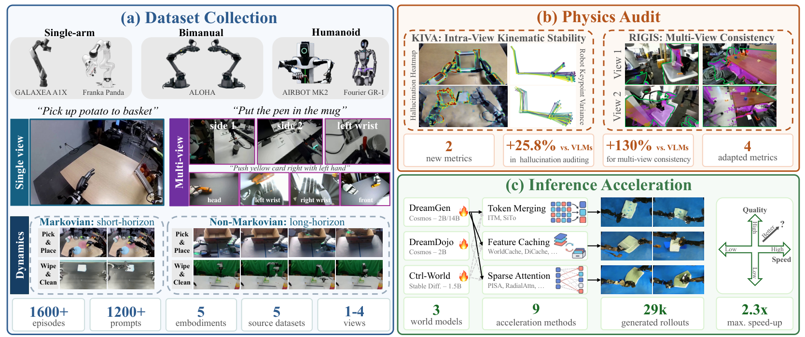
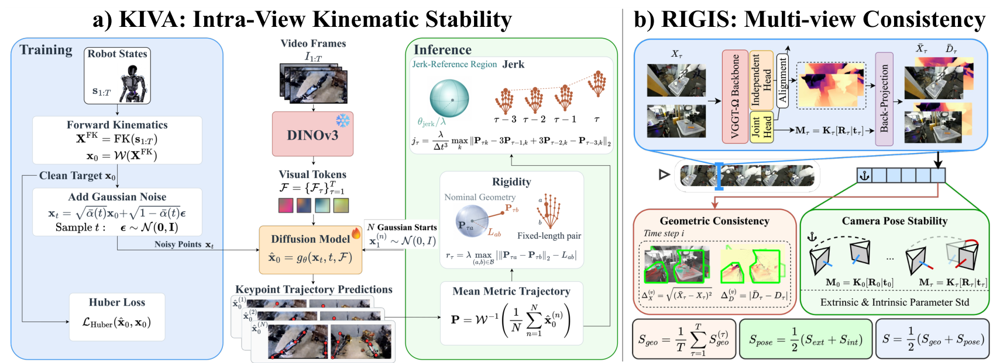
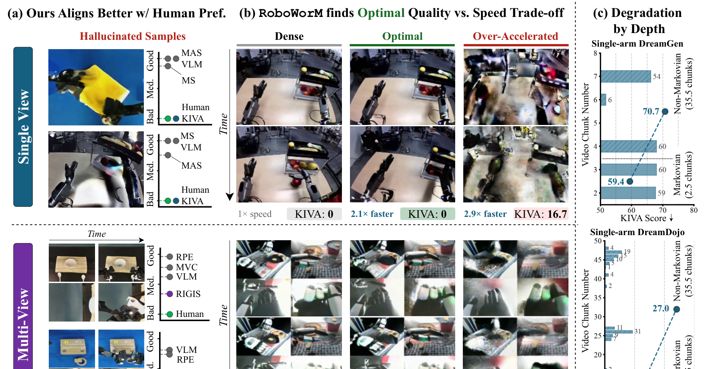

Physics you can check without asking a VLM

Read the abstract
Video world models (VWMs) are rapidly emerging as scalable neural simulators for robotic manipulation. However, most benchmarks only evaluate them as open-world video generators, using Vision-Language Models (VLMs) that lack strict 3D spatial and kinematic reasoning. To bridge this gap, we introduce RoboWorM, a comprehensive, deployment-aware benchmark that leverages known hardware priors such as robot kinematic trees and fixed camera configurations, to systematically examine structural and spatiotemporal fidelity. RoboWorM curates 1,605 real-world episodes across single-arm, bimanual, and humanoid morphologies, spanning both Markovian and long-horizon non-Markovian tasks under single- and multi-view setups.
To explicitly measure physical consistency, we propose two deterministic, VLM-free metrics: KIVA for intra-view kinematic stability, and RIGIS for multi-view geometric consistency. By exploiting intrinsic robotic invariants, KIVA improves hallucination detection alignment with human annotations by 25.8% relative to the strongest frontier VLMs, while RIGIS achieves a 130% higher Spearman correlation with human preferences. Furthermore, since real-world deployment requires low inference latency, we utilize RoboWorM to conduct the first large-scale audit of the quality-efficiency trade-off. Evaluating 9 state-of-the-art acceleration techniques across 3 leading world models (over 29,000 generated rollouts), we demonstrate how these acceleration methods can retain superficial visual quality while silently compromising deployment-critical physical constraints. Using our metrics, we achieve 2.3× maximum inference speed-up with minimal quality loss.
The RoboWorM benchmark
Five public corpora (DROID, RoboChallenge, the AIST bimanual corpus, RoboCOIN and NVIDIA GR00T Teleop GR1) give six configurations over five robots and three morphologies, each with short Markovian and long non-Markovian tasks and up to four synchronized cameras.
§3.2Three world models, three ways of rolling out
§3.3Nine acceleration methods in three families
Tab. 1Where RoboWorM sits among video world model benchmarks
Hybrid combines off-the-shelf algorithms and a VLM; IK / Sim is inverse kinematics plus simulation; Prior Alg. is a deterministic algorithm driven by dataset priors (camera calibration, robot proprioception, actions).
Method: two new physics metrics
KIVA checks the robot's kinematics inside each view. RIGIS checks that the views of a multi-camera rollout agree on one scene and one fixed rig.

KIVA: Kinematic Invariant Violation Assessment
A diffusion reader trained on real teleoperation reads 3-D robot keypoints from the pixels. Links cannot change length and joints cannot teleport, so KIVA measures both and compares them with real footage.
Real rollouts from the 300-video human study. Curves come from a re-read of the published checkpoints; the verdict uses the stored score, which falls in the same band.
RIGIS: Robotic Inter-view Geometry & Intrinsic-Extrinsic Stability
Cameras on a fixed rig see one scene and do not move. RIGIS lifts each view into 3-D with VGGT-Ω and checks whether the views agree where they overlap and whether the estimated cameras stay put.
On these five clips Sgeo stays between 0.879 and 0.886; Spose, from 0.61 on 00096 to 0.95 on 00278, is what separates them. Bands are tertiles among the 100 rated clips of each morphology; the paper reports rank correlation, not cuts.
Play with the formulas
Try a rollout
Geometric consistency, per view
Camera drift over the rollout
\(s_X = 1-\Delta_X,\; s_D = 1-(\Delta_D/\tilde d)^2,\; S_{\text{geo}} = \prod_v \tfrac12(s_X+s_D)\)
\(S_{\text{ext}} = \tfrac12(e^{-\sigma_R/5}+e^{-\sigma_t}),\; S_{\text{int}} = e^{-\sigma_K},\; S = \tfrac12(S_{\text{geo}}+S_{\text{pose}})\)
RIGIS formulas of Appendix B.2 on a schematic two-view rig. Presets are illustrative, not measured.
Closer to human judgment than VLM judges
Two annotators, with expert adjudication, rated 291 single-view and 300 multi-view videos on a three-point scale. Four frontier VLMs judged the same videos three times each, zero-shot and with chain-of-thought.
Do KIVA and RIGIS agree with people more often than VLM judges do?
Tables D4 and D5. KIVA overlap uses cuts calibrated on nine videos per morphology, averaged over 1,000 draws; Spearman ρ does not depend on the cuts.
300 rated clips, sorted by RIGIS and by a VLM judge
One dot per clip, one lane per morphology; the VLM position is the mean of its three runs. Ticks mark the median of each human label.
VLM verdicts drift between runs and slow down with chain-of-thought
VLM zero-shot + chain-of-thought ours, deterministic · Table D3.
Dense world models, and drift over long horizons
Ctrl-World leads every multi-view track; DreamDojo leads single-view
Ctrl-World processes views with explicit spatio-temporal attention, while DreamGen sees a 2 × 2 tiled frame through plain self-attention, and RIGIS picks up the difference on every multi-view comparison. KIVA degrades most in the two deepest configurations, single-arm DreamGen and DreamDojo.
Table 2. Medians under Markovian (Mkv) and non-Markovian (Non-Mkv) dynamics; bold is the better model per morphology. Single-view FVD is not comparable across models.
Within a clip, severity grows with rollout depth
In 130 of 193 multi-chunk clips the segment severity rises with the chunk index (mean ρ = +0.20, sign test p < 10−3), consistent with error accumulating over the rollout.
Table C4. Median rollout depth per clip against KIVA violation rate, Markovian vs. non-Markovian.
How much speed does physics survive?
Caching gives the most reliable acceleration: 1.7× mean speed-up for a RIGIS change of −0.004, and it wins all 12 configurations. WorldCache reaches the benchmark-best 2.3×. Token pruning loses the most quality (13.4% NR loss) for only 1.2×.
Figures 5, C2 and C3. One point per method and world model. Thin dashed lines are each model's dense score; the labelled line is real video.

Limitations
BibTeX
@inproceedings{roboworm2027,
title = {RoboWorM: Evaluating Movement Realism, Consistency and
Acceleration Affects in Embodied Video World Models},
author = {Anonymous},
booktitle = {Submitted to the International Conference on Learning Representations (ICLR)},
year = {2027},
note = {Under double-blind review}
}